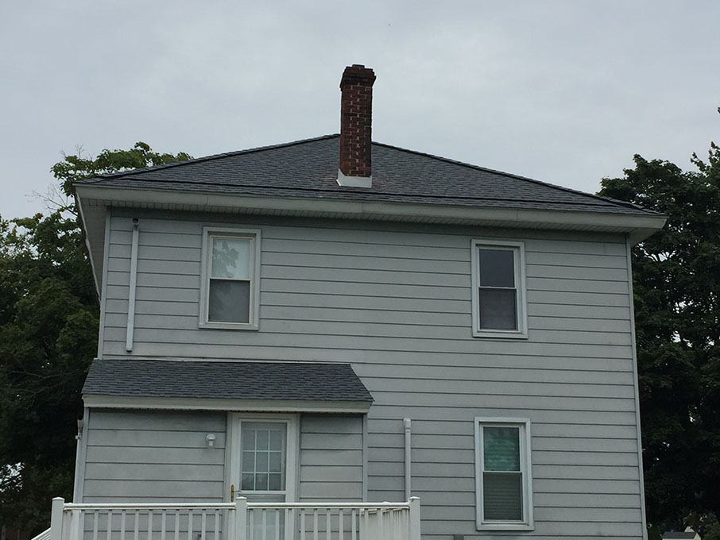

54 South Poplar Street: Then and Now
Exterior and Porch
-
Street view
Taken February 2018
-
Head-on view
There was a very large tree on the left side of the house, but it was removed a couple years before
-
Front porch
An enclosed porch, about 20' long
-
Front Door
The siding is aluminium and appears more blue-green on the porch than outdoors
-
Front porch, reversed
The fabled 29" door that nothing will fit through. Hopefully will be replaced in 2020
-
Back porch
There's no fence between this house and the neighbors
-

Backyard showing back of house
Taken from spot where shed would eventually go
-
Shed
Amish sheds last forever. Purchased in 2018 and maneuvered into position on PVC pipe rollers
-

Front of house, post-roof redo
There were two old roofs on top of cedar shakes when I bought the house. In mid-2019, I replaced the roof
-

Back of house, post-roof redo
Due to the roof construction, it was a full teardown and redo, plus re-flashing the chimney and adding vents